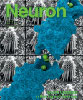

News Archives: Nov 1, 2003 - Jan 6, 2017
33 stories listed.
|
New York Times: "In Pursuit of a Mind Map, Slice by Slice"
- Dec. 27, 2010
The work of the Lichtman Lab to map the brain ... Tags: 2010, Jeff Lichtman |
|
|
Resolving the Molecular Architecture of Synapses using Light Microscopy
- Dec. 17, 2010
Synapses are highly specialized junctions between neurons that are the ... Tags: 2010, Neuron, publication |
|
|
Removing an Endogenous Prototoxin Restores Vision
- Dec. 9, 2010
Much of our behavior reflects the neural circuits sculpted by ... Tags: 2010, Science, Takao Hensch, publication |
|
|
How to Find Your Homolog Without Losing Your Sister
- Dec. 9, 2010
Meiosis is a modified cellular program by which a single ... Tags: 2010, Cell, Nancy Kleckner, publication |
|
|
Annual Holiday Gift Drive (until December 15th, 2010)
- Dec. 3, 2010
For the sixth year in a row, MCB Building Operations ... Tags: 2010, Food Drive, charitable work |
|
|
MCB in the News: Molecular Animation
- Nov. 18, 2010
The molecular animation work of Rob Lue, Professor of the ... Tags: 2010 |
|
|
Annual Thanksgiving Food Drive (Monday, November 15, until Friday, November 19, 2010)
- Nov. 15, 2010
For the fifth year in a row, MCB Building Operations ... Tags: 2010, Food Drive, charitable work |
|
|
Jack W. Szostak Presents 2010 Bloch Lecture
- Nov. 15, 2010
Jack W. Szostak was born in London and raised in ... Tags: 2010, Bloch Lecture, lecture |
|
|
Sniffing Out the Odor Code: A Role for Spike Timing
- Nov. 3, 2010
How would you describe the smell of fresh baked bread ... Tags: 2010, Naoshige Uchida, Neuron, publication |
|
|
Mice that Smell Light
- Oct. 18, 2010
Olfaction is a critical sense for many animals, guiding their ... Tags: 2010, Nature Neuroscience, Venkatesh Murthy, publication |
|
|
The Moving Parts of a Tail-Anchored Protein Sorting Machine
- Sept. 20, 2010
Membrane protein targeting is a fundamental problem in cell biology ... Tags: 2010, Molecular Cell, Vlad Denic, publication |
|
|
Life Sciences Outreach Focuses on Biodiversity
- Sept. 20, 2010
Two high school biology teachers crouched over microscopes in the ... Tags: MCB Outreach Program, 2010 |
|
|
Richard Losick: Getting from HHMI, Giving Back to Mr. Hill
- Sept. 9, 2010
With a renewed award from the prestigious Howard Hughes Medical ... Tags: 2010, Howard Hughes Medical Institute (HHMI), Richard Losick, awards |
|
|
Open House of the Harvard Center for Biological Imaging
- Sept. 2, 2010
On September 15th, Harvard's Center for Biological Imaging will ... Tags: 2010 |
|
|
Undergraduate Intern Learns in Susan Mango's MCB Lab
- Aug. 3, 2010
In a story entitled "Learning in the Labs," the July ... Tags: 2010, Susan Mango, undergraduate education |
|
|
Exercise, Caloric Restriction Rejuvenate Aging Synapses
- Aug. 2, 2010
Harvard researchers have uncovered a mechanism through which caloric restriction ... Tags: 2010, Jeff Lichtman, Joshua Sanes, Proceedings of the National Academy of Sciences, publication |
|
|
Parental Conflicts in the Brain
- July 8, 2010
Parents influence the brain development and the behavior of their ... Tags: 2010, Catherine Dulac, publication |
|
|
16th Annual Boston Bacterial Meeting to be Held at Science Center June 17-18
- June 4, 2010
The 2010 Boston Bacterial Meeting (BBM) will take place on ... Tags: 2010, Boston Bacterial Meeting |
|
|
Susan S. Taylor to Deliver 2010 Paul Doty Lecture
- May 20, 2010
Biochemist Susan S. Taylor, recipient of the 2010 FASEB Excellence ... Tags: 2010, Paul Doty Lecture, lecture |
|
|
Philippe Cluzel's Random Walk from Physics to Biology
- May 20, 2010
On a bookshelf in his office, MCB Professor of Molecular ... Tags: 2010, Philippe Cluzel, profile |
|
|
A Small Molecule Trigger for Biofilm Disassembly
- May 7, 2010
A three-way collaboration between the laboratories of Rich Losick in ... Tags: 2010, Richard Losick, Science, publication |
|
|
Laboratory Workshops for High School Students
- April 20, 2010
April 5th marked the final week for this year’s ... Tags: MCB Outreach Program, 2010 |
|
|  |
Molecular Mechanics of Hearing and Deafness
- April 15, 2010
Our senses are essential for survival and for the exploration ... Tags: 2010, Neuron, Rachelle Gaudet, publication |
 |
April 17th Symposium Explores the Richest Biological Reservoir on Earth: The Microbial World
- April 7, 2010
Microbes (including bacteria, viruses, fungi, and protists) are ubiquitous on ... Tags: 2010, Microbial Sciences Initiative at Harvard, Microbial Sciences Symposium, symposium |
|
The Chromatin Signature of Pluripotent Cells
- March 24, 2010
The genomes of most animals are inactive for hours or ... Tags: 2010, Alexander Schier, Nature, publication |
|
|
William M. Gelbart Receives Genetics Society of America Award
- March 4, 2010
William M. Gelbart, Professor of Molecular and Cellular Biology, will ... Tags: 2010, George W. Beadle Award, William Gelbart, awards |
|
|
Microbial Land Grab!
- March 3, 2010
Bacteria have been steadily shedding their former image as amorphous ... Tags: 2010, Karine Gibbs, profile |
|
|
Edward O. Wilson to give Prather Lectures April 5, 6, 7
- March 3, 2010
The annual John M. Prather Lectures in Biology will be ... Tags: 2010, Prather Lectures, lecture |
|
|
Modulating the Catalytic Activity of a Protein Phosphatase by Externally-imposed Force
- Feb. 19, 2010
There is widespread current interest in the roles of mechanical ... Tags: 2010, Nancy Kleckner, Proceedings of the National Academy of Sciences, publication |
|
|
AAI Honors Jack Strominger as Excellent Mentor
- Feb. 9, 2010
In May, Jack Strominger will receive the 2010 Excellence in ... Tags: 2010, Excellence in Mentoring Award from the American Association of Immunologists, awards |
|
|
Catherine Dulac Elected as AAAS Fellow
- Jan. 26, 2010
Catherine Dulac is one of 11 Harvard faculty members elected ... Tags: 2010, Catherine Dulac, Fellow in the American Association for the Advancement of Science, awards |
|
|
Predicting Drug Targets by Watching Zebrafish Sleep
- Jan. 14, 2010
Many psychiatric drugs were discovered decades ago through serendipity. For ... Tags: 2010, Alexander Schier, Science, publication |
|
|
Marvels of Bacterial Swarming
- Jan. 13, 2010
When grown on a rich medium on agar, many bacteria ... Tags: 2010, Howard Berg, Proceedings of the National Academy of Sciences, publication |